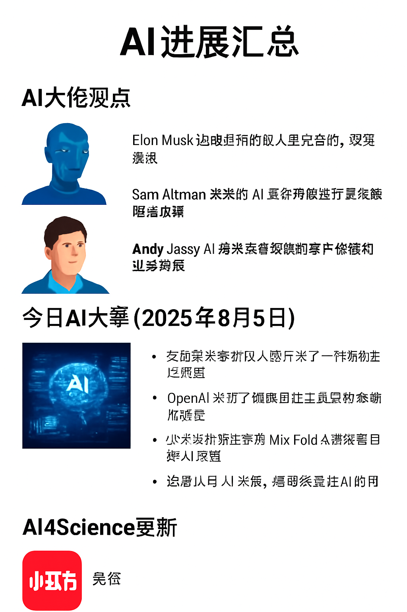

AI大佬观点
埃隆·马斯克
特斯拉与SpaceX创始人马斯克在2025年7月30日通过X（前身为Twitter）发文指出：“解决饥饿、疾病和贫困的道路在于AI和机器人。”他强调将利用人工智能终结疾病和饥饿，认为机器人与AI的结合是改善人类福祉的关键【590348188365380†screenshot】。
萨姆·奥特曼
OpenAI首席执行官奥特曼在TED2025会议中接受TED负责人克里斯·安德森采访时表示，“AI革命将长期存在”。奥特曼指出，AI的增长令人惊叹，像ChatGPT这样的模型可能很快成为人类自身的延伸。他还强调未来的世界中，AI几乎肯定会超过人类智能，并呼吁重视安全、权力和道德的平衡【593591022813235†screenshot】。
安迪·贾西
亚马逊首席执行官安迪·贾西在2025年6月的一次采访中谈到生成式AI对企业的影响。他认为，生成式AI将提升生产力，但也会导致公司部分职位减少；一些岗位将被AI取代，其他岗位则需要员工学习新技能【117884635800338†screenshot】。
今日AI大事（2025年8月5日）
- 小米推出下一代语音模型，可在智能汽车与智能家居设备之间提供具备上下文记忆的自然交互【62449032084403†screenshot】。
- xAI发布多模态工具Grok‑Imagine，能够生成逼真的图像甚至不适宜内容，引发关于伦理与监管的讨论【62449032084403†screenshot】。
- 时尚杂志《Vogue》在广告中使用AI生成的模特，被指忽视真实模特的代表性，引发广泛争议【325732279907507†screenshot】。
- 卡内基梅隆大学得到美国国家科学基金会资助，成立AI数学发现研究院，利用AI推动数学证明和定理发现【325732279907507†screenshot】。
- 研究人员利用AI发现了有潜力的新型电池材料，可显著提升能源存储效率并加速材料发现【789846741407546†screenshot】。
- 博通推出高速AI芯片以提高数据中心连接效率；同时信用评估机构Experian推出AI工具来现代化信用风险模型【105779447741202†screenshot】。
- 劳埃德银行宣布名为“Athena”的生成式AI助手，用于帮助客户中心员工更快速回答问题【151823143998950†screenshot】。
- 斯坦福大学构建虚拟AI科学家，可以独立设计并运行实验，为科学研究提供新方式【282624421455414†screenshot】。
- 越来越多企业推行AI技能培训，例如英国大型服装零售商Debenhams投资135万英镑建立AI技能学院，以提升员工的AI素养【789846741407546†screenshot】。
AI4Science进展
AI4Science（AI for Science）旨在运用人工智能技术加速科学发现。近期的代表性进展包括：
- Anthropic公司在2025年5月宣布推出AI for Science计划，向高影响科学项目的研究人员提供免费API额度，重点支持生物学和生命科学应用。Anthropic认为高级AI推理和语言能力可以帮助研究人员分析复杂科学数据、生成假设、设计实验并更有效地交流研究成果，进而加速药物发现、基因数据分析和农业生产【531589357260025†screenshot】。
- 斯坦福大学开发了虚拟AI科学家，该系统能够自主运行实验并分析结果，为科研人员节省大量时间【282624421455414†screenshot】。
- 人工智能被用于发现新的电池材料、预测蛋白质结构和发现药物分子等。例如研究团队利用AI识别出可能改进电池性能的新材料【789846741407546†screenshot】。
- AI辅助医学不断进步：AI系统在视网膜图像中早期发现糖尿病视网膜病变，可及早发现疾病【151823143998950†screenshot】；还有研究者开发出具有98%准确率的通用深度伪造检测器，有助于辨别虚假视频【789846741407546†screenshot】。
- 卡内基梅隆大学的AI数学研究院正在探索让AI参与数学定理证明，推动数学领域的自动化研究【325732279907507†screenshot】。
关注梵低（小红书）
更多关于AI4Science的讨论与实践可以关注小红书账号梵低（小红书号：8936318663）。该账号分享AI科研、科普文章以及个人实验心得，欢迎扫码关注或直接在小红书中搜索ID。